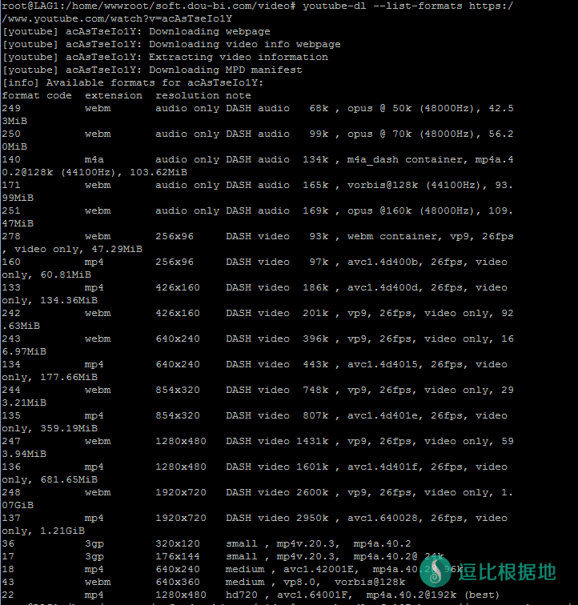
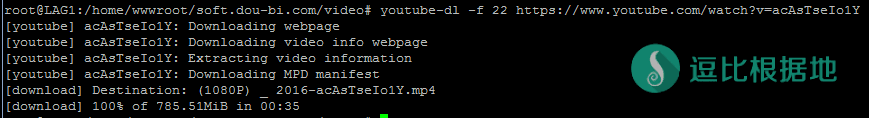

在一些特殊的条件需求下，一些人可能需要vps离线下载视频，或者在不科学上网的情况下在线观看。
有人给我推荐了Youtube-dl，的确很强大，这篇文章只是简单介绍一下Youtube-dl的基础功能和如何在自己的VPS上面在线观看。
如果你只是想要简单的下载youtube视频到本地，请看这个：教你如何从YouTube上下载视频
安装步骤
安装很简单，Youtube-dl支持Windows，Linux，OS X，etc等系统，这次主要介绍Linux系统。
以下代码不一定是最新的，最新的请去 官方下载中心 查看。
Linux系统安装：
以下三种下载安装方式选择一个就行了。
curl -L https://yt-dl.org/downloads/2016.07.13/youtube-dl -o /usr/local/bin/youtube-dl chmod a+rx /usr/local/bin/youtube-dl
如果你的vps没有安装 curl ，可以使用 wget 来下载。
wget https://yt-dl.org/downloads/2016.07.13/youtube-dl -O /usr/local/bin/youtube-dl chmod a+rx /usr/local/bin/youtube-dl
当然你也可以用pip来安装，如果你没有pip就先安装pip， apt-get install python-pip -y
pip install --upgrade youtube_dl
OS X系统安装：
wget https://yt-dl.org/downloads/2016.07.13/youtube-dl.sig -O youtube-dl.sig gpg --verify youtube-dl.sig /usr/local/bin/youtube-dl rm youtube-dl.sig
Windows系统安装：
直接官方下载一个exe文件就行了。
但是，要运行这个程序还需要安装微软的运行库。
Microsoft Visual C++ 2010 Redistributable Package (x86)
基础功能介绍
Youtube-dl的官网是：http://rg3.github.io/youtube-dl/
Github项目地址是：https://github.com/rg3/youtube-dl
在这里都能看到最新最全的youtube-dl信息。
Youtube-dl支持八百多家视频网站，具体列表可以看这里：http://rg3.github.io/youtube-dl/supportedsites.html ，优酷、爱奇艺等国内视频网站也是支持的。
下载视频
以下教程均以 这个youtube视频链接为例 https://www.youtube.com/watch?v=jK5coaM2X9g
最基础的下载视频的方法很简单，直接 youtube-dl URL
youtube-dl https://www.youtube.com/watch?v=jK5coaM2X9g
这样就会自动选择一个最好的视频格式和清晰度下载到 当前的文件夹 了。
如果想把这个视频的所有格式都下载下来怎么办？
下载全部格式
youtube-dl --all-formats https://www.youtube.com/watch?v=jK5coaM2X9g
–all-formats ：添加这个参数之后，所有存在的格式全部下载；
但是你又不想全部下载，想挑选指定视频的格式和清晰度怎么办？
列出视频的所有格式/清晰度
–list-formats/-F：这是一个列清单参数，执行后并不会下载视频，但能知道这个目标视频都有哪些格式存在，这样就可以有选择的下载啦！
youtube-dl --list-formats https://www.youtube.com/watch?v=jK5coaM2X9g
然后就会看到一大片的视频格式，如果你要下载其中一个，请看前面第一列的编号ID。

下载指定格式视频
-f + 编号：通过上一步获取到了所有视频格式的列表，第一列就是编号对应着不同的格式，例如我想下载22号那个mp4格式分辨率为1280*720的视频，则按下面的命令就可以轻松指定下载视频哦；
youtube-dl -f 22 https://www.youtube.com/watch?v=jK5coaM2X9g

离线下载/后台下载
我发现Youtube-dl不带有后台下载的功能，或者说我没找到命令，不过没事，可以使用 screen 来实现。
首先如果你没有安装 screen 的话请先安装。
Debian/Ubuntu系统安装：
apt-get update apt-get install screen
Centos系统安装：
yum update yum install screen
然后用 -S 创建一个活动，这时候你就进入了这个活动中，你就可以去下载视频了，这时候即使关闭ssh也不会断开下载。
screen -S video
如果你不小心关闭ssh或者想要重新查看 video活动，可以用 -r 来重新进入这个活动
screen -r video
VPS中在线播放
这个其实很简单，HTML5本身就可以去播放指定格式的视频，所以我们只需要搭建一个nginx或者apache，把视频下载到默认虚拟主机的文件夹里，就可以在线观看了。
示例：逗比云
还有你也可以试一下：『原创』SimpleHTTPServer 快速搭建HTTP Web服务 + 一键脚本
这个工具，可以方便的开放一个HTTP服务（可能不够稳定），可以让你在线观看或者下载开放文件夹里面的文件。
需要注意的是，HTML5支持在线播放的格式有限，建议下载 mp4 和 Webm 格式的，免得HTML5无法在线播放。
为了方便长期使用，这里安装 Caddy，挺简单的一个HTTP Server。
wget -N --no-check-certificate https://raw.githubusercontent.com/ToyoDAdoubiBackup/doubi/master/caddy_install.sh && chmod +x caddy_install.sh && bash caddy_install.sh install http.filemanager
安装Caddy成功后，继续新建一个虚拟主机文件夹，
mkdir /usr/local/caddy/www && mkdir /usr/local/caddy/www/youtube
写入配置到 Caddy 配置文件，注意下面这五行要一起复制粘贴，不是一行一行复制！如果要绑定域名，可以把 :80 { 改成域名比如 http://tooyo.ml{
# 以下全部内容是一个整体，是一个命令，全部复制粘贴到SSH软件中并一起执行！
echo ":80 {
root /usr/local/caddy/www/youtube
timeouts none
gzip
browse
}" > /usr/local/caddy/Caddyfile
然后启动 Caddy即可
service caddy start
以后去 /usr/local/caddy/www/youtube 目录下载视频就行了。
cd /usr/local/caddy/www/youtube
然后打开网页： http://VPS_IP 就可以看到当前文件夹下面的文件，点击任意一个 mp4文件就可以在线观看了。
Caddy 使用方法
启动：service caddy start
停止：service caddy stop
重启：service caddy restart
查看状态：service caddy status
其他说明
实现网盘式操作
Caddy自带的目录列表功能很简陋，不能 新建/重命名/移动/删除 文件/文件夹等操作，所以可以使用 Caddy的 FileManager 扩展。
参考使用方法看这里。
注意：2017/03/23 17:50 之前通过本教程安装的Caddy，皆没有这个扩展，需要卸载重装！
启动显示成功，但是实际未运行
因为 服务脚本判断的问题，只判断了nohub是否运行 Caddy成功，但没有判断 Caddy 是否保持正常运行。
你可以理解为，nohub成功启动了 Caddy，但是 Caddy因为配置文件错误等原因，启动后又退出了。
所以这种情况下，你应该去查看启动日志：
tail -f /tmp/caddy.log
就暂时先介绍这么多，稍后慢慢补充。
转载请超链接注明：逗比根据地 » 使用Youtube-dl离线下载YouTube视频并且VPS上在线观看
责任声明：本站一切资源仅用作交流学习，请勿用作商业或违法行为！如造成任何后果，本站概不负责！


你是想下载VPS上面的文件，还是用Aria2下载文件到VPS上面？
而且Aria2是分前端和后端的，还有你为什么把Apache2和Nginx都安装了？这是会冲突的，会导致其中一个无法启动。
建议你回复之前先捋清楚。
没有说谁为谁服务的，都一样，我教程中只是把Nginx和Apache2都列举出来想用哪个用哪个。
你把几个文章都给看混了，而且不理解Nginx和Apache2的区别。
或者，你在
/var/www/html目录下新建一个文件夹，比如mkdir /var/www/html/aria2，然后你把你的Aria2所有文件文件放到/var/www/html/aria2文件夹里，这样你就可以通过访问http://ip来正常下载的文件了，也可以通过http://ip/aria2来访问Aria2的界面了。